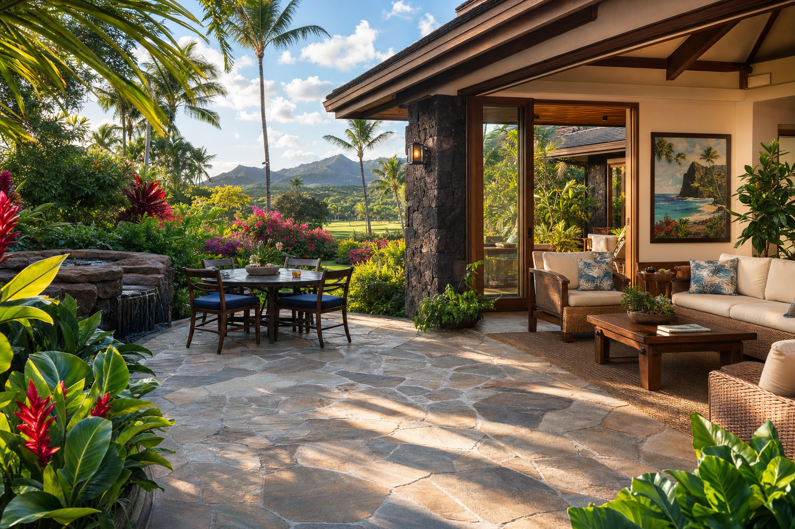

Kauai's outdoor living is one of the most distinctive pleasures of island life. The climate permits year-round outdoor use of lanais, pool decks, garden paths, and dining areas in ways that mainland homeowners can only experience a few months of the year. Choosing the right tile or paver for these outdoor spaces is crucial — the wrong material becomes a safety hazard, deteriorates quickly, or simply doesn't hold up to Hawaii's conditions.
The Critical Factor: Slip Resistance
The most important specification for any outdoor tile in Hawaii is slip resistance. Tiles around pools, on lanais, and on walkways will regularly be wet — from rain, pool splash, morning dew, and garden irrigation. A tile must have sufficient surface texture to provide grip when wet. We require a minimum R10 coefficient of friction (COF) rating for outdoor horizontal surfaces near water, and R11 or higher for pool surrounds. Never install polished or high-gloss tile outdoors in Hawaii.
Large-Format Porcelain Pavers
24x24 inch and larger porcelain pavers have become our most-requested outdoor material. They create a clean, modern aesthetic with minimal grout lines. They're available in textures ranging from subtle sand finishes to natural stone looks. Their non-porous composition means they don't absorb moisture, don't stain from fallen tropical fruit or bird activity, and hold up beautifully over years of Hawaii weather.
Natural Basalt and Slate
For homes seeking a more organic, naturalistic outdoor aesthetic — especially those in Kauai's lush North Shore and rural communities — natural basalt and slate pavers are beautiful choices. Their natural texture provides excellent slip resistance. They develop a subtle patina over time that integrates with the landscape. They do require periodic sealing to prevent moisture infiltration and staining.
Concrete Pavers for Driveways and Heavy Traffic
For driveways, carports, and high-traffic walkways, concrete pavers offer excellent durability and cost effectiveness. They're easy to repair — individual pavers can be replaced if damaged without disturbing the entire installation. They're available in a range of textures and colors that can complement any home's aesthetic.
Free consultations and quotes from Kauai's premier tile and stone craftsmen.
Get Free Quote →